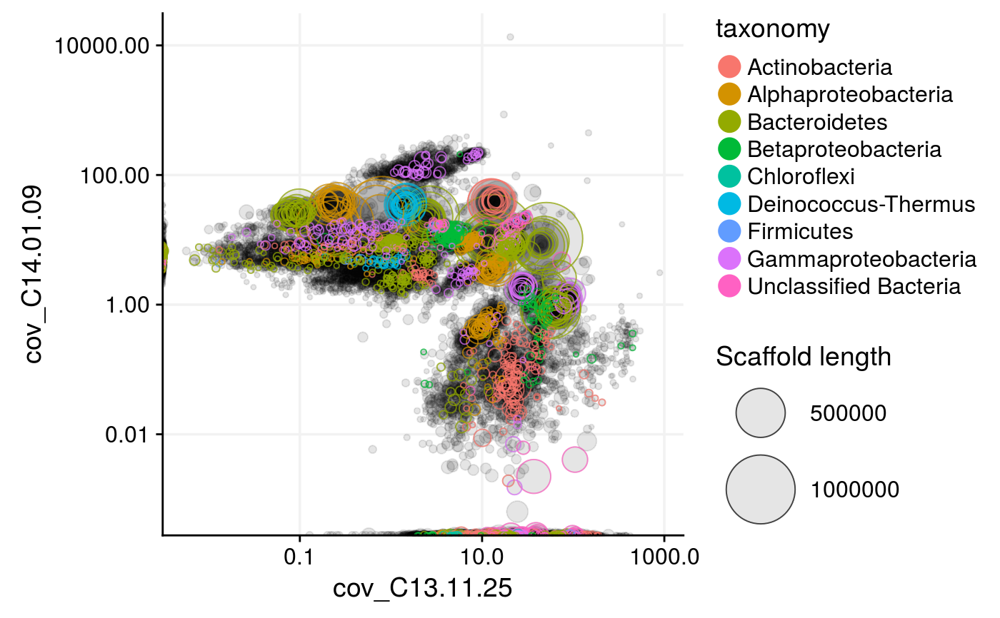
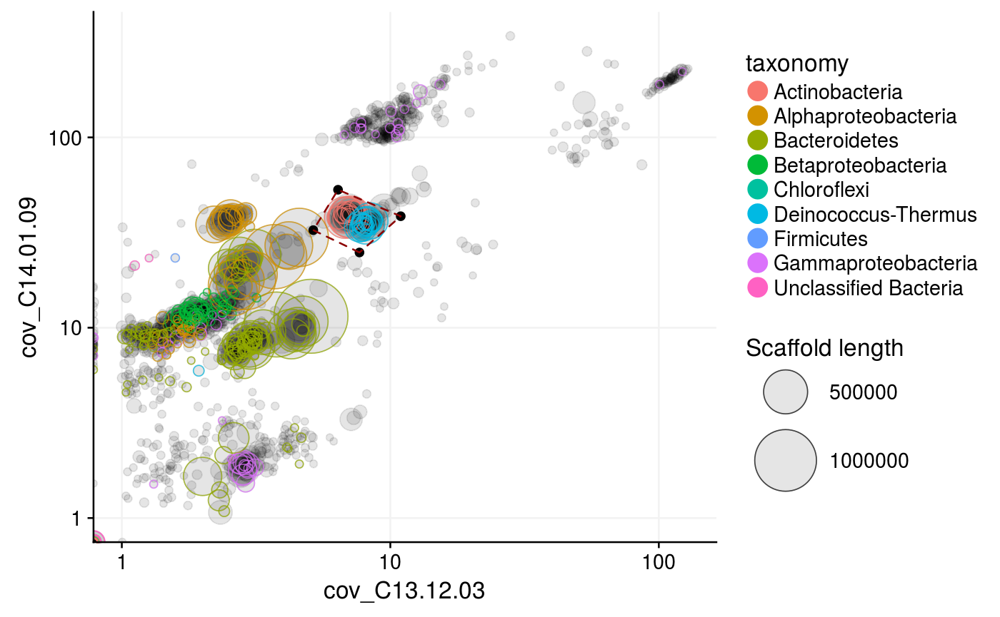

Plots any information about the scaffolds contained in the given mm object as a scatterplot, for example different coverage variables, scaffold length, GC content, or anything else that were loaded with mmload. Scaffolds can then be highlighted and extracted using the locator and selection features.
mmplot(mm, x, y, min_length = 0, color_by = NULL, locator = FALSE, selection = NULL, network = NULL, shared_genes = FALSE, label_scaffolds = FALSE, label_scaffolds_by = "scaffold", highlight_scaffolds = NULL, highlight_color = "darkred", x_scale = NULL, x_limits = NULL, y_scale = NULL, y_limits = NULL, alpha = 0.1, fixed_size = NULL, size_scale = 1, color_vector = c("red", "green", "blue"), color_scale_log10 = FALSE)
| mm | (required) A dataframe loaded with |
|---|---|
| x | (required) The variable from |
| y | (required) The variable from |
| min_length | Remove scaffolds with a length at or below this value before plotting. (Default: |
| color_by | Color the scaffolds by a variable in |
| locator | (Logical) When |
| selection | A 2-column dataframe with the x and y coordinates of points with which to draw a polygon onto the plot to highlight a selected region. A selection can be obtained by using the locator feature (by |
| network | Paired-end or mate-pair connections between scaffolds in long format. The first and second columns must contain all connected scaffold pairs and the third column the number of connections. |
| shared_genes | (Logical) If |
| label_scaffolds | Add text labels (with text from the variable in mm defined by |
| label_scaffolds_by | The variable in mm by which to label the scaffolds defined by |
| highlight_scaffolds | A vector of scaffold names or a dataframe loaded with |
| highlight_color | The color with which to highlight the scaffolds set by |
| x_scale | Log10-scale ( |
| x_limits | Axis limits of the x axis. (Default: |
| y_scale | Log10-scale ( |
| y_limits | Axis limits of the y axis. (Default: |
| alpha | The transparancy of the scaffold points, where 0 is invisible and 1 is opaque. (Default: |
| fixed_size | A fixed size for all scaffolds if set. If |
| size_scale | A factor to scale the sizes of the scaffolds plotted. Only applies when |
| color_vector | The colors from which to generate a color gradient when |
| color_scale_log10 | (Logical) Log10-scale the color gradient when |
A ggplot2 object.
library(mmgenome2) data(mmgenome2) mmgenome2#> # A tibble: 97,285 x 10 #> scaffold length gc cov_C13.11.14 cov_C13.11.25 cov_C13.12.03 #> <chr> <dbl> <dbl> <dbl> <dbl> <dbl> #> 1 1 8264 57.8 1.44 53.6 0 #> 2 2 1027 57.0 0.625 24.2 0 #> 3 3 1665 55.9 13.5 434 0.166 #> 4 4 9056 35.9 0.0100 23.4 0 #> 5 5 3343 64.0 3.20 16.4 0 #> 6 6 98207 39.1 0.00966 24.5 3.29 #> 7 7 6480 63.0 2.61 19.2 1.46 #> 8 8 15790 61.7 2.78 21.2 1.62 #> 9 9 1403 70.4 85.1 192 0 #> 10 10 2018 70.2 50.3 101 0 #> # ... with 97,275 more rows, and 4 more variables: cov_C14.01.09 <dbl>, #> # geneID <chr>, phylum <fct>, rRNA16S <fct>mmplot(mmgenome2, min_length = 10000, x = "cov_C13.12.03", y = "cov_C14.01.09", color_by = "phylum", #locator = TRUE, x_scale = "log10", y_scale = "log10")#> Warning: Transformation introduced infinite values in continuous x-axis#> Warning: Transformation introduced infinite values in continuous y-axis#> Warning: Transformation introduced infinite values in continuous x-axis#> Warning: Transformation introduced infinite values in continuous y-axis#Set "locator = TRUE" to interactively capture the coordinates of #mouse clicks in an mmplot, or provide coordinates with "selection": selection <- data.frame(cov_C13.12.03 = c(7.676, 5.165, 6.386, 10.933), cov_C14.01.09 = c(24.852, 32.545, 53.062, 38.52)) mmplot(mmgenome2, min_length = 10000, x = "cov_C13.12.03", y = "cov_C14.01.09", color_by = "phylum", x_scale = "log10", y_scale = "log10", x_limits = c(1,NA), #zoom in at minimum 1x coverage y_limits = c(1,NA), #zoom in at minimum 1x coverage selection = selection) #highlight the selection marked with locator#> Warning: Transformation introduced infinite values in continuous x-axis#> Warning: Transformation introduced infinite values in continuous y-axis#> Warning: Transformation introduced infinite values in continuous x-axis#> Warning: Transformation introduced infinite values in continuous y-axis